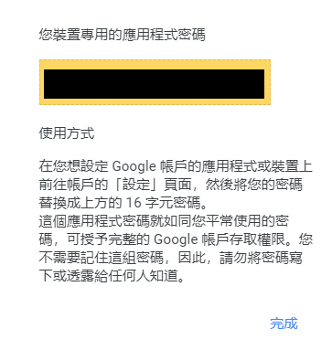

作為一個手頭不是特別寬裕的Steam玩家，如果有撿便宜的機會需要好好把握(例如意圖使人剁手的夏季特賣)。除了折扣外，偶爾也會去4gamers查看看有沒有有興趣的Steam限時免費遊戲可拿。但壞就壞在這個偶爾，經常發生領取時間過一天才看到的遺憾發生。
因此，就來試試看用python寫一個小程式，提醒自已有新的文章吧！
我把這個程式主要功能分成三個，一個個去實現：
- 爬蟲：取得指定關鍵字的貼文標題、連結
- 寄信：把標題跟連結寄給使用者
- 定時執行：嚴格來說這個不是程式本身的功能，因為我最後是透過windows內建的工作排程器完成的
爬蟲
在寫程式之前，先找一下目標的資訊在哪裡。
因為我們是要定時取得特定關鍵字的資訊，所以先到搜尋頁面。試著搜尋可以看到結果即時更新，可以合理推測在打字的過程中，向伺服器傳送了要求，並得到回覆(搜尋結果)。
打開開發者工具，再試著輸入關鍵字可以看到果然伺服器回應了一個連結，打開後可以看到是一個json檔，裡面就包含了我們所要的內容。
接著就可以開始寫code了。
回到PyCharm，導入以下的函式庫：
1 | import requests |
- requests：需先使用pip下載。用內建的urllib也可以，只是這個比較方便。
- datetime：處理時間相關的問題
建立一個函式crawler()，並輸入以下內容：
1 | # 取得網頁內容 # |
- 這邊我把關鍵字”免費”寫死在url裡面，也可以拿出來方便改動
- requests有提供取得json內容的函式(
json())
1 | recommend_list = [] |
- 這裡我們建立一個迴圈，利用日期篩選過去24小時內發布的文章
- 每篇文章發布時間紀錄在json中的createPublishedAt，使用epoch time紀錄(1970/01/01至今所經過的時間)，json檔紀錄的單位到毫秒(因為javascript的
getTime()的輸入單位是毫秒)，因此要先將數值除以1000變成秒，才能讓python的datetime.datetime.fromtimestamp(epoch)讀取，並與現在時間比較。 - 符合條件的文章，我們只取標題與超連結，並加入
recommend_list。 - 篩選完畢後，回傳
recommend_list。 - 可以先執行看看，可以發現我們已經取得了需要的資訊。
- 接著建立一個新函式
get_content()，產生信件的內文部分：
1 | def get_content(r_list): |
寄信
導入以下函式庫：
1 | from email.mime.multipart import MIMEMultipart |
- python內建email函式庫負責email的內容，但透過SMTP進行傳輸的任務是透過smtplib模組負責。
1 | def sendmail(cont): |
環境變數
上面的帳號密碼我會採用環境變數儲存，如果自己寫的程式需要輸入一些不得外流的資料，可以先設定在環境變數，這樣程式移動到不同環境執行時，機敏數值就不會跟著程式碼轉移(尤其是給其他人使用時)
- 在開始功能表按右鍵>系統>進階系統設定
- 點選環境變數
- 在系統變數的地方按下新增，輸入變數的名稱與值，確認之後就可以在程式中透過
os.environ.get("變數名稱")呼叫他們了
密碼
由於google會禁止來路不明的程式存取帳戶，因此在我們寫的程式中必須使用應用程式密碼進行登入，所以要先對帳戶進行設定。
設定兩步驟驗證
設定完後，會出現應用程式密碼
選擇其他
取一個名字

產生一組密碼

須注意如果使用者更改帳戶密碼，應用程式密碼就需要重新設定，而且如果不需要使用建議刪掉。
整合
至此，我們已經完成程式的主要功能了，接下來將這些功能整合：
1 | if __name__ == '__main__': |
如果順利的話，只要執行程式，你應該就能夠收到包含文章標題、連結的email(除非指定的時間內沒有新文章)。
自動執行
最後希望能夠每天固定時間執行程式，這裡我採用windows內建的「工作排程器」完成。
開啟後，點選「建立基本工作」
輸入名稱
選擇執行的週期
設定時間
程式或指令碼的地方選擇python的執行檔，新增引數則輸入要執行的py檔位置。
最後按下完成，就完成設定了。正常情況下只要電腦開著，一到指定的時間就會自動執行。
留言版